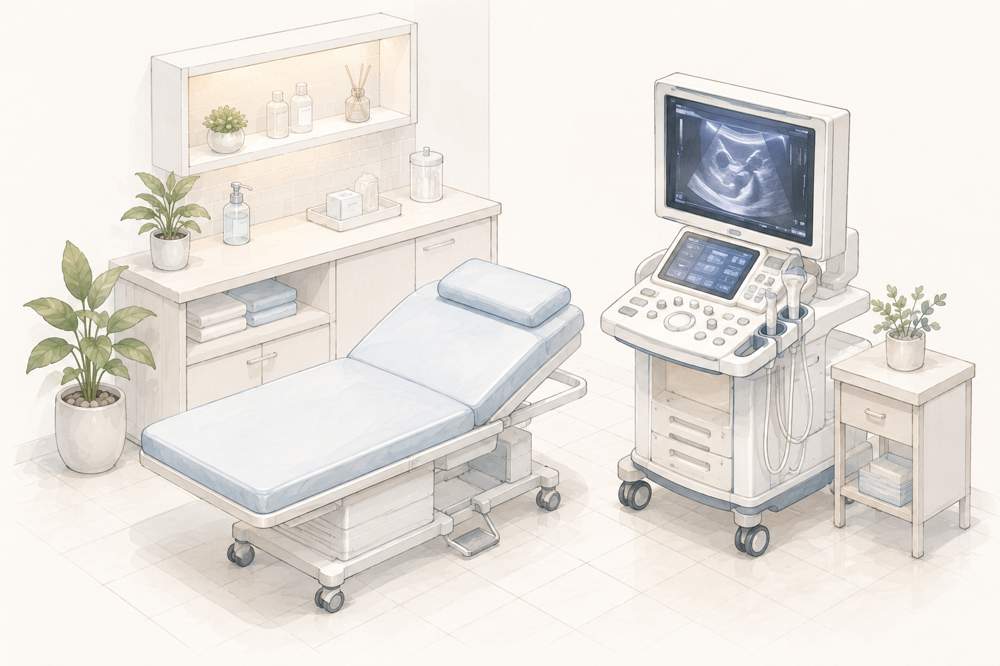

較偏囊性、反覆蓄液
完成必要評估後，可能討論再次抽吸、酒精消融或其他處理；選擇取決於復發、症狀、組成與安全性。
甲狀腺結節可能以實質組織為主，也可能含有較多液體。酒精消融較常被討論的，是經診斷評估後、反覆出現的良性囊性病灶。
因此第一個問題不是「能不能打酒精」，而是先確認這顆病灶的內容、良惡性風險、復發情況，以及它是否真的造成症狀或外觀困擾。
HOW IT WORKS
這裡示範「圖文版時間軸」：展開後左側閱讀說明、右側搭配影像。正式內容可讓每一步使用不同圖片，也能改回純文字版。
再次辨識囊腫位置、組成及鄰近重要構造，確認病灶是否符合治療評估方向。

在超音波引導下處理囊腫內液體，同時觀察病灶輪廓、剩餘內容物與變化。

依專業判斷讓酒精作用於目標區域；實際操作與停留方式由醫療團隊依病灶狀況決定。

後續以症狀與超音波觀察體積變化，以及是否仍有殘存、再次蓄積或需要重新評估。
CHOOSING A PATH
完成必要評估後，可能討論再次抽吸、酒精消融或其他處理；選擇取決於復發、症狀、組成與安全性。
酒精消融未必能合理回應問題，可能需要考慮觀察、RFA、手術或其他診療方向。
AFTER TREATMENT
治療後不只看當天是否順利，也需要觀察囊腫是否縮小、症狀是否改善，以及是否再次蓄積。
常見問題
不是。兩者的作用方式與較常討論的病灶類型不同。病灶的液體與實質比例、診斷、症狀及位置，都會影響選擇。
不一定。仍需要評估病灶性質、復發情況、影響程度、風險與其他方案，再共同決定是否需要處理。
不能保證。後續仍需要追蹤，部分情況可能需要再次處理或重新討論治療方向。